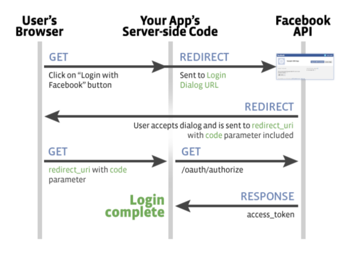

More info in book Mastering Modern Web Penetration Testing
Test stealing tokens
Test in step 2 if typeparameter can be tampered with tokenvalue
https://www.facebook.com/v2.0/dialog/oauth?client_id=123 &redirect_uri=https%3A%2F%2Fwww.example.com%2Foauth%2Fcallback
&response_type=token&scope=email&state=XYZ
Testing Open Redirect
https://api.trusted.com/oauth2/authorization?response_
type=code&client_id=75e7i92lbwy4p4&scope=blahblahblah&redirect_
uri=http://exploit.example.com/
https://api.trusted.com/oauth2/authorization?response_
type=code&client_id=idontexistbro&scope=read&redirect_uri=http://
exploit.example.com/
http://example.com/token/callback/../../our/path
http://example.com/token/callback/.%0a./.%0d./our/path
http://example.com/token/callback/%252e%252e/%252e%252e/our/path
/our/path///../../http://example.com/token/callback/
http://example.com/token/callback/%2e%2e/%2e%2e/our/path